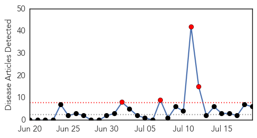
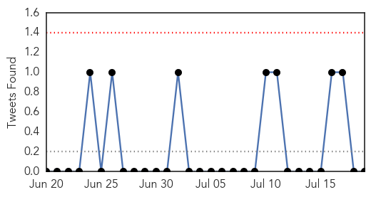
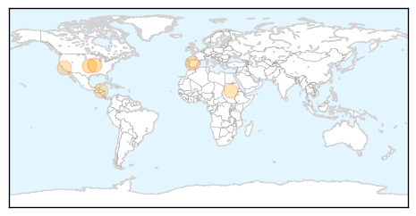
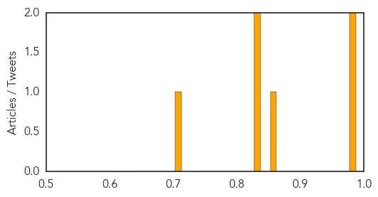

Influenza
30-Day Web Trend
4 alerts, 0 warnings

30-Day Twitter Trend
0 alerts, 0 warnings

Article Locations
Article Confidences
Top Articles:
- 0.980
- Antibiotics May Have Been Wrongly Prescribed For Influenza « CBS Atlanta
- 0.977
- Immunization for Ontario health care workers lags as patients die
- 0.856
- Risks of Flu Research Demand Openness From Labs
- 0.836
- From anthrax to bird flu – the dangers of lax security in disease-control labs
- 0.831
- Doctors Without Borders Calls for Wider Access to Vaccines for Children in Emergencies - Uganda
- 0.700
- As final migrant kids leave Nogales, officials say they are in good health
Top Tweets:
-
No tweets found for Jul 19, 2014
Measles
30-Day Web Trend
0 alerts, 0 warnings

30-Day Twitter Trend
0 alerts, 0 warnings

Article Locations

Article Confidences

Top Articles:
- 0.985
- State says Ohio measles outbreak could be at end - Twinsburg Bulletin
- 0.834
- The Durango Herald 07/16/2014
- 0.796
- WFMJ.com News weather sports for Youngstown-Warren Ohio
- 0.742
- Sedgwick County Health busy with measles questions
- 0.735
- Our Opinion: Don't buy the anti-vaccination rhetoric
- 0.587
- 21-month-old boy becomes city’s eighth polio victim
Top Tweets:
-
No tweets found for Jul 19, 2014